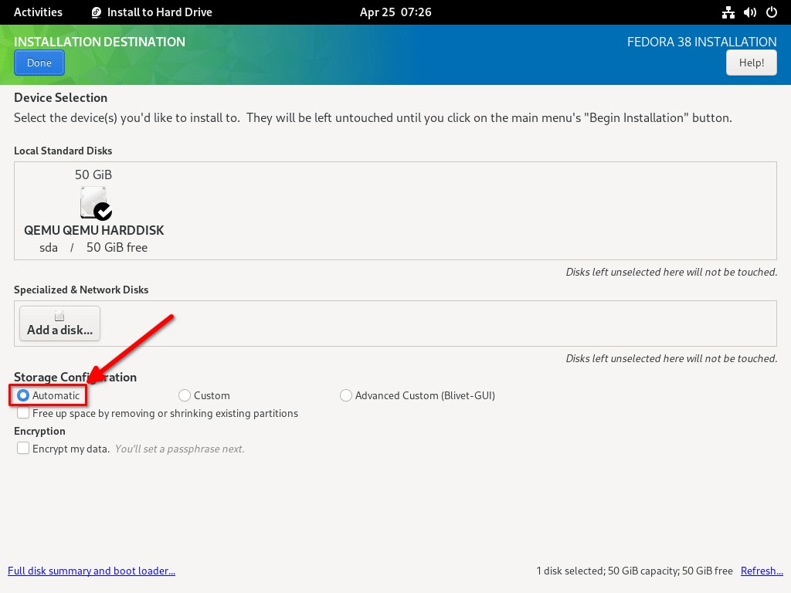
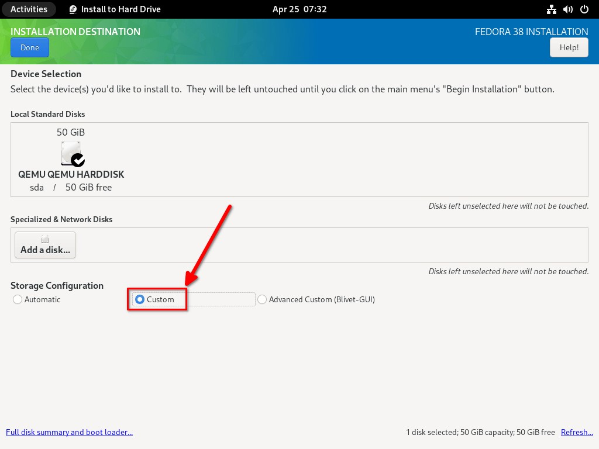
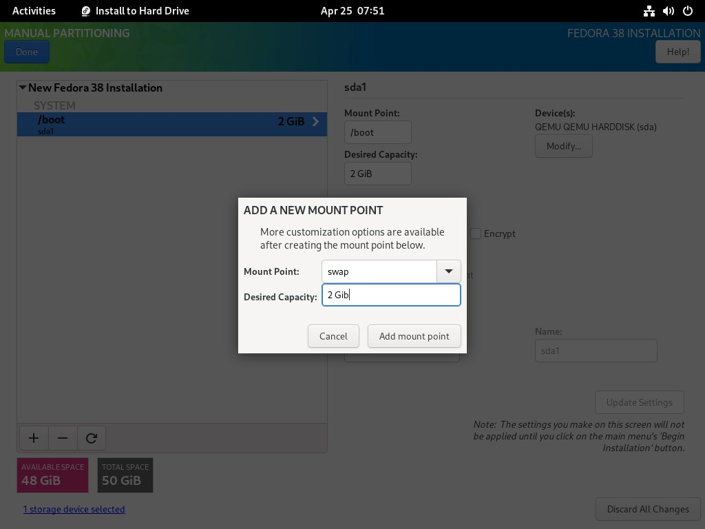

Descargar imagen ISO de Fedora 38
Hay cinco tipos de distribución que ofrece Fedora:
- Fedora Workstation - Edición de escritorio.
- Fedora Server - Cargas de trabajo del servidor.
- Fedora IoT - Ecosistema IoT.
- Fedora CoreOS - Sistema operativo mínimo para cargas de trabajo en contenedores.
- Fedora Cloud - Sistema operativo mínimo para usos en nubes públicas y privadas.
Descargue la imagen ISO de Fedora 38 desde la página oficial de descargas. También puede optar por descargar imágenes ISO a través de archivos torrent.
Si desea instalar y probar Fedora en cualquier hipervisor (Virtualbox, KVM, Vmware), simplemente omita la creación de medios y arranque la imagen ISO.
Crear Fedora 38 Bootable Medium
Una vez que se descarga el archivo ISO de Fedora 38, debe crear un medio USB de arranque. Hay muchas herramientas de creación de USB de arranque disponibles para crear un medio USB de arranque.
Puede elegir cualquiera de las siguientes herramientas para crear un USB
Puede elegir cualquiera de las siguientes herramientas para crear un USB de arranque de Fedora Linux.
Herramientas de creación de USB de arranque de línea de comandos:
- Cómo crear unidades USB de arranque múltiple con Ventoy en Linux
- Cómo crear una unidad USB de arranque usando el comando dd
- Bootiso le permite crear de forma segura una unidad USB de arranque en Linux
Herramientas gráficas de creación de USB de arranque:
- Cree una unidad USB de arranque con Ventoy WebUI en Linux
- Cree unidades USB y tarjetas SD de arranque con Etcher en Linux
- Popsicle – Cree varias unidades USB de arranque a la vez
- Cree una unidad USB de arranque con USBImager en Linux
- Kindd - Una interfaz gráfica para el comando dd
Si desea instalar y probar Fedora en cualquier hipervisor (Virtualbox, KVM, Vmware), simplemente omita la creación de medios y arranque la imagen ISO.
Pasos de instalación de Fedora 38
El instalador de Fedora es fácil de usar para principiantes, por lo que no encontrará ninguna dificultad para instalar Fedora 38. Sólo tienes que seguir los pasos que se indican a continuación y estarás bien.
PASO 1 - Arrancar el sistema
con Fedora ISO
Inicie su sistema con la unidad USB de arranque Fedora 38 recién creada. Verás el siguiente menú.
Por defecto, la segunda opción, es decir, "Probar este medio e iniciar Fedora-Workstation-Live 38". Si quieres probar tu ISO de Fedora, sólo tienes que ir con esta opción. Si no desea probar los medios, elija la primera opción y arranque Fedora en vivo de inmediato.
Iré con la primera opción "Iniciar Fedora Workstation Live 38" se selecciona automáticamente para arrancar en el sistema en vivo.

Ahora, se le darán dos opciones. Puede iniciar la instalación de Fedora eligiendo "Instalar Fedora" para instalar Fedora en su disco o probar la versión en vivo de Fedora para ver qué hay allí antes de instalar Fedora. He decidido ir con la primera opción, es decir, Instalar Fedora.
Si desea saber lo que realmente hay en la nueva versión de Fedora, elija la opción "Ahora no" para ingresar al entorno en vivo de Fedora 38 y probarlo a fondo.
PASO 2 - Elegir el idioma
de instalación
En este paso, debe elegir el idioma que desea utilizar durante todo el proceso de instalación. Después de elegir el idioma, presione
Paso 3 - Configurar el teclado,
la zona horaria
Y Particionar el disco
En este paso, debe configurar los siguientes tres ajustes importantes antes de continuar con el siguiente paso.
- 1.Distribución del teclado
- 2.Hora y fecha
- 3.Particionamiento del disco duro
PASO 3.1 - Configurar la distribución
del teclado
En este paso, puede elegir la distribución de teclado que desea utilizar. Puede elegir una o más distribuciones de teclado y configurar métodos abreviados de teclado para cambiar entre diferentes distribuciones.
Después de elegir las distribuciones de teclado, haga clic en el botón "Listo" en la esquina superior izquierda. Ahora serás redirigido a la pantalla anterior donde podrás configurar los otros dos ajustes.
PASO 3.2 - Configurar la zona horaria
Elija su región geográfica y la ciudad en función de la ubicación geográfica seleccionada. Puede elegir la región y la ciudad directamente en los cuadros desplegables o seleccionar la ubicación en el mapa. También puede habilitar el protocolo de tiempo de red (NTP) activándolo.
Después de elegir las distribuciones de teclado, haga clic en el botón "Listo" en la esquina superior izquierda. Ahora serás redirigido a la pantalla anterior donde podrás configurar los otros dos ajustes.
PASO 3.3 - Partición de disco
En este paso, debe decidir el destino de la instalación y cómo se particionará el disco. De forma predeterminada, se elegirá el método de partición automática. Si es un principiante que desea que el instalador realice un esquema de particionado adecuado para automáticamente, puede elegir esta opción.
Elija el método de partición automática
Si eres un intermedio o un avanzado que desea particionar tu disco según tu gusto, elige la opción "Personalizado" y presiona "Listo" para comenzar a crear particiones personalizadas.
En Fedora 38, el tipo de sistema de archivos Btrfs se selecciona automáticamente. También puede elegir otras opciones, como Standard, LVM o LVM thin provisioning. En el siguiente paso, tendrás que elegir entre la partición estándar o LVM y pulsar el símbolo (+) para añadir una nueva partición. También puede marcar la casilla de verificación "Cifrar mis datos" si desea cifrar automáticamente las particiones.
Para el propósito de esta guía, voy con el esquema de partición Btrfs sin cifrado.
Para crear un nuevo punto de montaje, haga clic en el botón + (más).
En la siguiente pantalla, elija el tipo de punto de montaje (por ejemplo, /boot) y el tamaño deseado (por ejemplo, 2 GB) para el punto de montaje.
Se le pedirá que cree un nuevo punto de montaje y le asigne espacio.
Ahora hemos creado la partición y le hemos asignado espacio. De forma predeterminada, la partición /boot elegirá ext4 como su tipo de sistema de archivos predeterminado. También puede cambiar el sistema de archivos como desee. Verá los detalles del punto de montaje recién creado en el lado derecho de la ventana del instalador./boot
Se crea la partición de arranque De nuevo, haga clic en el botón + (Más) y cree otras particiones. Elija "swap"como punto de montaje y asigne el tamaño deseado a la partición de intercambio y haga clic en el botón "Add mount point".
Crear partición de intercambio
A continuación, necesitamos crear la partición raíz que es necesaria para la instalación de Fedora. Para ello, haga clic en el botón + (Más), elija / como punto de montaje y asígnele el tamaño deseado (por ejemplo, 20 GB).
Crear partición raíz
De nuevo, haga clic en el botón + (Más), elija el tipo de punto de montaje (por ejemplo, /home) y asígnele el tamaño deseado.
Crear partición de inicio
A continuación, necesitamos crear una partición más llamada biosboot, que es necesaria para los discos GPT. Puede asignar un tamaño mínimo (1 MB) a esta partición. Como me queda más espacio en el disco, asigné 100 MB.
Crear punto de montaje de Biosboot.
Si queda espacio libre en la unidad, puede crear particiones adicionales (por ejemplo, ) y asignarle un tamaño./var Una vez que haya creado todas las particiones necesarias, presione "Done" dos veces. Ahora verá el resumen de los cambios en las particiones. Si está de acuerdo con ello, haga clic en Accept Changes para guardar el esquema de partición y continuar con el siguiente paso.
PASO 4 - Iniciar la instalación de Fedora
Ahora están configurados los tres parámetros del resumen de instalación. Presione "Comenzar instalación" para comenzar a instalar Fedora 38 workstation desktop edition.
Comience la instalación de Fedora 38 La instalación de Fedora 38 comenzará ahora. Esto tardará unos minutos en completarse.
Instalación de Fedora 38 Workstation
Una vez que se complete la instalación de Fedora 38, presione "Finalizar instalación".
Instalación de escritorio de Fedora 38 completada
Reinicie la máquina para comenzar a usar el escritorio Fedora 38.
Reiniciar
PASO 5 - Instalación posterior de Fedora
Después de reiniciar la máquina, obtendrá un nuevo asistente de configuración. Le pedirá que establezca algunos parámetros como funciones de ubicación, informes de errores, creación de nuevos usuarios, etc.
Haga clic en "Iniciar configuración para" continuar.
Configurar Fedora 38
En la siguiente pantalla, tendrá las opciones para configurar los ajustes relacionados con la privacidad, como habilitar los servicios de ubicación y los informes automáticos de errores. Mueva el interruptor de encendido/apagado para activar o desactivar estos servicios. De forma predeterminada, ambos se establecerán en ON
Configurar los ajustes de privacidad
A continuación, puede habilitar o deshabilitar repositorios de terceros. Los repositorios de terceros proporcionan aplicaciones adicionales o software propietario de fuentes externas. De forma predeterminada, esta opción está deshabilitada. Haga clic en Habilitar para habilitar los repositorios de terceros.
Configurar repositorios de terceros
En el siguiente paso, puede conectar una o más cuentas en línea para acceder a su correo, contactos, calendario, documentos y fotos desde la nube. También puede hacerlo más tarde desde la sección Configuración.
Conecte sus cuentas en línea
Introduzca aquí los datos de su cuenta de usuario. Este usuario se añadirá automáticamente a la lista de sudoers.
Establecer la contraseña de la cuenta de usuario
¡Felicidades! ¡La configuración del escritorio Fedora 38 está completa y está lista para usar!
La configuración de Fedora 38 se ha completado
Como ya se ha dicho, Fedora 38 se envía con el último entorno de escritorio GNOME 44. En el primer inicio de sesión, aparecerá el mensaje emergente de GNOME 44 tour. Si desea saber qué hay de nuevo en GNOME 44, haga clic en el botón "Hacer recorrido" y aprenda a moverse. Esto hará un recorrido visual, para que pueda aprender sobre las características clave de la edición Fedora 38 Workstation.
Bienvenido a GNOME 44
Así es como se ve el escritorio GNOME de Fedora 38 Workstation.
Estacion de trabajo Fedora 38
Para ver la versiona intstala,vaya a Configuración
configuración de Fedora 38
Haga click en la seccion de Acerca de